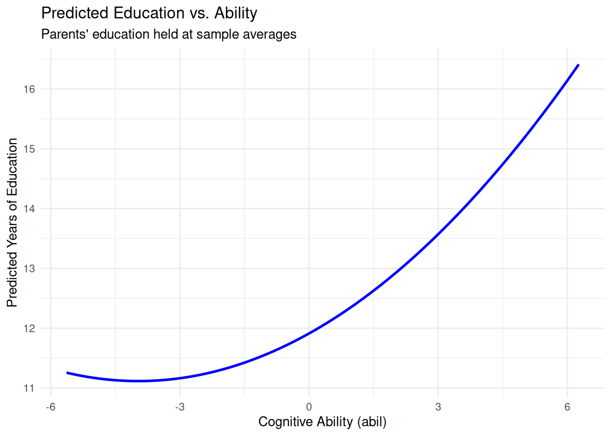

library(tidyverse)
library(wooldridge)
library(knitr)
library(modelsummary)
library(broom)
library(car)3 Multiple Regression Analysis: Estimation
3.1 C1 [BWGHT]
A problem of interest to health officials (and others) is to determine the effects of smoking during pregnancy on infant health. One measure of infant health is birth weight; a birth weight that is too low can put an infant at risk for contracting various illnesses. Since factors other than cigarette smoking that affect birth weight are likely to be correlated with smoking, we should take those factors into account. For example, higher income generally results in access to better prenatal care, as well as better nutrition for the mother. An equation that recognizes this is \[bwght = \beta_0 + \beta_1 cigs + \beta_2 faminc + u\]
c1 <- bwght
kable(head(c1))| faminc | cigtax | cigprice | bwght | fatheduc | motheduc | parity | male | white | cigs | lbwght | bwghtlbs | packs | lfaminc |
|---|---|---|---|---|---|---|---|---|---|---|---|---|---|
| 13.5 | 16.5 | 122.3 | 109 | 12 | 12 | 1 | 1 | 1 | 0 | 4.691348 | 6.8125 | 0 | 2.6026897 |
| 7.5 | 16.5 | 122.3 | 133 | 6 | 12 | 2 | 1 | 0 | 0 | 4.890349 | 8.3125 | 0 | 2.0149031 |
| 0.5 | 16.5 | 122.3 | 129 | NA | 12 | 2 | 0 | 0 | 0 | 4.859812 | 8.0625 | 0 | -0.6931472 |
| 15.5 | 16.5 | 122.3 | 126 | 12 | 12 | 2 | 1 | 0 | 0 | 4.836282 | 7.8750 | 0 | 2.7408400 |
| 27.5 | 16.5 | 122.3 | 134 | 14 | 12 | 2 | 1 | 1 | 0 | 4.897840 | 8.3750 | 0 | 3.3141861 |
| 7.5 | 16.5 | 122.3 | 118 | 12 | 14 | 6 | 1 | 0 | 0 | 4.770685 | 7.3750 | 0 | 2.0149031 |
- What is the most likely sign for \(\beta_2\)?
Interpretation:
The expected sign for \(\beta_2\) is positive. Higher family income is generally associated with better access to prenatal care and improved maternal nutrition , both of which positively impact infant birth weight.
- Do you think
cigsandfamincare likely to be correlated? Explain why the correlation might be positive or negative.
Interpretation:
Yes, cigs and faminc are likely to be negatively correlated. Historically, smoking rates tend to be higher among lower-income demographics. Because family income is correlated with both the dependent variable (birth weight) and the primary independent variable (cigarettes smoked), omitting it from the model will result in omitted variable bias (OVB).
- Now, estimate the equation with and without
faminc, using the data in BWGHT. Report the results in equation form, including the sample size and R-squared. Discuss your results, focusing on whether addingfamincsubstantially changes the estimated effect ofcigsonbwght.
c1m <- lm(bwght ~ cigs, data = c1)
c1m2 <- lm(bwght ~ cigs + faminc, data = c1)
c1models <- list(
"Without Income" = c1m,
"With Income" = c1m2
)
modelsummary(
c1models,
fmt = 2,
statistic = NULL,
gof_map = c("nobs", "r.squared"),
coef_rename = c(
"(Intercept)" = "Constant",
"cigs" = "Cigarettes/Day",
"faminc" = "Family Income ($1000s)"
)
)| Without Income | With Income | |
|---|---|---|
| Constant | 119.77 | 116.97 |
| Cigarettes/Day | -0.51 | -0.46 |
| Family Income ($1000s) | 0.09 | |
| Num.Obs. | 1388 | 1388 |
| R2 | 0.023 | 0.030 |
Interpretation:
Including faminc reduces the magnitude of the smoking coefficient from approximately \(-0.514\) to \(-0.463\). This confirms that the simple regression suffered from omitted variable bias. We can decompose this bias theoretically using the formula: \[\text{Bias} = \beta_2 \times \tilde{\delta}_1\]\(\beta_2\) (Income effect on birth weight): Expected to be positive.\(\tilde{\delta}_1\) (Income-smoking correlation): Expected to be negative.Direction of Bias: Positive \(\times\) Negative = Negative Bias.Because the true partial effect of smoking (\(\beta_1\)) is negative, this negative bias pulls the simple OLS estimate further away from zero (from \(-0.463\) to \(-0.514\)), overstating the detrimental effect of smoking when income is omitted
3.2 C2 [HPRICE1]
Use the data in HPRICE1 to estimate the model \[price = \beta_0 + \beta_1sqrft + \beta_2bdrms + u\] where
priceis the house price measured in thousands of dollars.
c2 <- hprice1
kable(head(c2))| price | assess | bdrms | lotsize | sqrft | colonial | lprice | lassess | llotsize | lsqrft |
|---|---|---|---|---|---|---|---|---|---|
| 300.000 | 349.1 | 4 | 6126 | 2438 | 1 | 5.703783 | 5.855359 | 8.720297 | 7.798934 |
| 370.000 | 351.5 | 3 | 9903 | 2076 | 1 | 5.913503 | 5.862210 | 9.200593 | 7.638198 |
| 191.000 | 217.7 | 3 | 5200 | 1374 | 0 | 5.252274 | 5.383118 | 8.556414 | 7.225481 |
| 195.000 | 231.8 | 3 | 4600 | 1448 | 1 | 5.273000 | 5.445875 | 8.433811 | 7.277938 |
| 373.000 | 319.1 | 4 | 6095 | 2514 | 1 | 5.921578 | 5.765504 | 8.715224 | 7.829630 |
| 466.275 | 414.5 | 5 | 8566 | 2754 | 1 | 6.144775 | 6.027073 | 9.055556 | 7.920810 |
- Write out the results in equation form.
c2m <- lm(price ~ sqrft + bdrms, data = c2)
modelsummary(
c2m,
fmt = 2,
statistic = NULL,
gof_map = c("nobs", "r.squared"),
coef_rename = c(
"(Intercept)" = "Constant",
"sqrft" = "Size (sq. ft.)",
"bdrms" = "Number of Bedrooms"
)
)| (1) | |
|---|---|
| Constant | -19.31 |
| Size (sq. ft.) | 0.13 |
| Number of Bedrooms | 15.20 |
| Num.Obs. | 88 |
| R2 | 0.632 |
Interpretation:
\[\widehat{price} = \hat{\beta}_0 + 0.128 sqrft + 15.2 bdrms\] \(n = 88, R^2 = 0.632\)
- What is the estimated increase in price for a house with one more bedroom, holding square footage constant?
Interpretation:
Holding square footage constant (ceteris paribus), the estimated increase in price for an additional bedroom is $15,200. However, this partial effect may lack practical realism; adding a bedroom without increasing the total square footage implies partitioning existing space, which could result in smaller, cramped rooms and potentially decrease the home’s overall appeal.
- What is the estimated increase in price for a house with an additional bedroom that is 140 square feet in size? Compare this to your answer in part (ii).
base_house <- data.frame(sqrft = 140, bdrms = 1)
upgraded_house <- data.frame(sqrft = 280, bdrms = 2)
price_1 <- predict(c2m, newdata = base_house)
price_2 <- predict(c2m, newdata = upgraded_house)
cat(round(price_2 - price_1, 2))33.18Interpretation:
The estimates increase is $33,180. This represents the combined value of adding a room that is 140 square feet \[ 140 \times 0.13 + 15.2 = 33.2\]
- What percentage of the variation in price is explained by square footage and number of bedrooms?
Interpretation:
The model explains 63.2% of the variation in house prices (\(R^2 = 0.632\)). This indicates that the combination of total square footage and the number of bedrooms jointly accounts for a substantial majority of the variance in home selling prices within this sample.
- The first house in the sample has
sqrft= 2,438 andbdrms= 4. Find the predicted selling price
cat(c2m$fitted.values[1])354.6052Interpretation:
By plugging the house’s characteristics into the estimated regression equation, the predicted selling price (\(\widehat{price}\)) is $354,605.
- The actual selling price of the first house in the sample was $300,000 Find the residual for this house. Does it suggest that the buyer underpaid or overpaid for the house?
cat(c2m$residuals[1])-54.60525Interpretation:
Residual is $-54,605. Because the actual selling price is lower than the model’s predicted price (resulting in a negative residual), it suggests that the buyer underpaid relative to the expected market valuation implied by the house’s size and bedroom count.
3.3 C3 [CEOSAL2]
The file CEOSAL2 contains data on 177 chief executive officers and can be used to examine the effects of firm performance on CEO salary.
c3 <- ceosal2
kable(head(c3))| salary | age | college | grad | comten | ceoten | sales | profits | mktval | lsalary | lsales | lmktval | comtensq | ceotensq | profmarg |
|---|---|---|---|---|---|---|---|---|---|---|---|---|---|---|
| 1161 | 49 | 1 | 1 | 9 | 2 | 6200 | 966 | 23200 | 7.057037 | 8.732305 | 10.051908 | 81 | 4 | 15.580646 |
| 600 | 43 | 1 | 1 | 10 | 10 | 283 | 48 | 1100 | 6.396930 | 5.645447 | 7.003066 | 100 | 100 | 16.961130 |
| 379 | 51 | 1 | 1 | 9 | 3 | 169 | 40 | 1100 | 5.937536 | 5.129899 | 7.003066 | 81 | 9 | 23.668638 |
| 651 | 55 | 1 | 0 | 22 | 22 | 1100 | -54 | 1000 | 6.478509 | 7.003066 | 6.907755 | 484 | 484 | -4.909091 |
| 497 | 44 | 1 | 1 | 8 | 6 | 351 | 28 | 387 | 6.208590 | 5.860786 | 5.958425 | 64 | 36 | 7.977208 |
| 1067 | 64 | 1 | 1 | 7 | 7 | 19000 | 614 | 3900 | 6.972606 | 9.852194 | 8.268732 | 49 | 49 | 3.231579 |
- Estimate a model relating annual salary to firm sales and market value. Make the model of the constant elasticity variety for both independent variables.
c3m <- lm(lsalary ~ lsales + lmktval, data = c3)
modelsummary(
c3m,
fmt = 2,
statistic = NULL,
gof_map = c("nobs", "r.squared"),
coef_rename = c(
"(Intercept)" = "Constant",
"lsales" = "Log(Sales)",
"lmktval" = "Log(Market Value)"
)
)| (1) | |
|---|---|
| Constant | 4.62 |
| Log(Sales) | 0.16 |
| Log(Market Value) | 0.11 |
| Num.Obs. | 177 |
| R2 | 0.299 |
- Add
profitsto the model from part (i). Why can this variable not be included in logarithmic form? Would you say that these firm performance variables explain most of the variation in CEO salaries?
ggplot(c3, aes(x = profits)) +
geom_histogram(bins = 30)
c3m2 <- lm(lsalary ~ lsales + lmktval + profits, data = c3)
modelsummary(
c3m2,
fmt = 2,
statistic = NULL,
gof_map = c("nobs", "r.squared"),
coef_rename = c(
"(Intercept)" = "Constant",
"lsales" = "Log(Sales)",
"lmktval" = "Log(Market Value)",
"profits" = "Profits"
)
)| (1) | |
|---|---|
| Constant | 4.69 |
| Log(Sales) | 0.16 |
| Log(Market Value) | 0.10 |
| Profits | 0.00 |
| Num.Obs. | 177 |
| R2 | 0.299 |
Interpretation:
The profits variable cannot be included in logarithmic form because it contains negative values for certain firms experiencing losses. The natural logarithm is strictly undefined for non-positive numbers.Regarding the explanatory power, these firm performance variables explain approximately 30% of the variation in CEO salaries (\(R^2 \approx 0.30\)). Therefore, they do not explain most of the variation. The remaining 70% of the variance is captured by the error term, which accounts for unobserved factors such as unmeasured managerial talent, specific industry conditions, or corporate governance dynamics.
- Add the variable
ceotento the model in part (ii). What is the estimated percentage return for another year of CEO tenure, holding other factors fixed?
c3m3 <- lm(
lsalary ~ lsales + lmktval + profits + ceoten,
data = c3
)
modelsummary(
c3m3,
fmt = 2,
statistic = NULL,
gof_map = c("nobs", "r.squared"),
coef_rename = c(
"(Intercept)" = "Constant",
"lsales" = "Log(Sales)",
"lmktval" = "Log(Market Value)",
"profits" = "Profits",
"ceoten" = "Tenure"
)
)| (1) | |
|---|---|
| Constant | 4.56 |
| Log(Sales) | 0.16 |
| Log(Market Value) | 0.10 |
| Profits | 0.00 |
| Tenure | 0.01 |
| Num.Obs. | 177 |
| R2 | 0.318 |
Interpretation:
The estimated coefficient on tenure (\(\hat{\beta}_4\)) is approximately 0.01. Because the dependent variable (lsalary) is in logarithmic form and the independent variable (ceoten) is in levels (a log-level specification), we interpret this as a semi-elasticity. Holding firm performance variables constant (ceteris paribus), one additional year of CEO tenure is associated with an approximate 1% increase in salary.
- Find the sample correlation coefficient between the variables
log(mktval)andprofits. Are these variables highly correlated? What does this say about the OLS estimators?
c3 |>
summarise(
Correlation = cor(lmktval, profits)
) |>
round(2) Correlation
1 0.78Interpretation:
The sample correlation coefficient between log(mktval) and profits is 0.78. This strong positive linear relationship indicates a high degree of multicollinearity between the two explanatory variables.Regarding the OLS estimators, this multicollinearity does not violate OLS assumptions, meaning the coefficient estimates remain unbiased and consistent. However, the high correlation inflates the standard errors for these specific variables. This variance inflation reduces the precision of the estimates, making it statistically difficult to isolate the individual partial effect of market value from the partial effect of profits.
3.4 C4 [ATTEND]
Use the data in ATTEND for this exercise.
c4 <- attend
kable(head(c4))| attend | termGPA | priGPA | ACT | final | atndrte | hwrte | frosh | soph | missed | stndfnl |
|---|---|---|---|---|---|---|---|---|---|---|
| 27 | 3.19 | 2.64 | 23 | 28 | 84.375 | 100.0 | 0 | 1 | 5 | 0.4726891 |
| 22 | 2.73 | 3.52 | 25 | 26 | 68.750 | 87.5 | 0 | 0 | 10 | 0.0525210 |
| 30 | 3.00 | 2.46 | 24 | 30 | 93.750 | 87.5 | 0 | 0 | 2 | 0.8928571 |
| 31 | 2.04 | 2.61 | 20 | 27 | 96.875 | 100.0 | 0 | 1 | 1 | 0.2626050 |
| 32 | 3.68 | 3.32 | 23 | 34 | 100.000 | 100.0 | 0 | 1 | 0 | 1.7331933 |
| 29 | 3.23 | 2.93 | 26 | 25 | 90.625 | 100.0 | 0 | 1 | 3 | -0.1575630 |
- Obtain the minimum, maximum, and average values for the variables
atndrte,priGPA, andACT.
c4 |>
summarise(
across(
c(atndrte, priGPA, ACT),
list(
min = \(x) min(x, na.rm = TRUE),
max = \(x) max(x, na.rm = TRUE),
avg = \(x) mean(x, na.rm = TRUE)
)
)
) |>
round(2) atndrte_min atndrte_max atndrte_avg priGPA_min priGPA_max priGPA_avg ACT_min
1 6.25 100 81.71 0.86 3.93 2.59 13
ACT_max ACT_avg
1 32 22.51Interpretation:
Attendance Rate (atndrte): Ranges from 6.25% to 100%, with a sample mean of 81.71%.
Prior GPA (priGPA): Ranges from 0.86 to 3.93, with a sample mean of 2.59.
ACT Score (ACT): Ranges from 13 to 32, with a sample mean of 22.51.
- Estimate the model \[atndrte = \beta_0 + \beta_1 priGPA + \beta_2 ACT + u\] and write the results in equation form. Interpret the intercept. Does it have a useful meaning?
c4m <- lm(atndrte ~ priGPA + ACT, data = c4)
modelsummary(
c4m,
fmt = 2,
statistic = NULL,
gof_map = c("nobs", "r.squared"),
coef_map = c(
"(Intercept)" = "Constant",
"priGPA" = "Prior GPA",
"ACT" = "ACT Score"
)
)| (1) | |
|---|---|
| Constant | 75.70 |
| Prior GPA | 17.26 |
| ACT Score | -1.72 |
| Num.Obs. | 680 |
| R2 | 0.291 |
c4 |>
select(atndrte, priGPA, ACT) |>
pivot_longer(cols = c(priGPA, ACT), names_to = "variable", values_to = "value") |>
ggplot(aes(x = value, fill = atndrte > 80)) +
geom_histogram(bins = 20, position = "identity", alpha = 0.6) +
facet_wrap(~variable, scales = "free") +
theme_minimal() +
scale_x_continuous(n.breaks = 10) +
theme(axis.text.x = element_text(angle = 90, vjust = 1, hjust = 1))
Interpretation:
\[\widehat{atndrte} = 75.70 + 17.26 priGPA - 1.72 ACT\]
The estimated intercept (\(\hat{\beta}_0\)) is approximately 75.7. Mechanically, this predicts an attendance rate of 75.7% for a student with a prior GPA of 0 and an ACT score of 0. This estimate lacks any useful economic or practical meaning. As shown in part (i), minimum values for GPA and ACT in this sample are 0.86 and 13, respectively. Evaluating the model at zero for both variables involves severe extrapolation outside the relevant range of the data, describing a hypothetical student who likely does not exist in a university setting.
- Discuss the estimated slope coefficients. Are there any surprises?
Interpretation
The coefficient on priGPA is positive, indicating that, ceteris paribus, students with higher past academic performance tend to have higher attendance rates, which aligns with standard expectations.However, the coefficient on ACT (\(\hat{\beta}_2 = -1.72\)) is negative. This means that, holding prior GPA constant, a one-point increase in a student’s ACT score is associated with a 1.72 percentage point decrease in their attendance rate. This is somewhat surprising, as one might assume higher standardized test scores correlate with higher academic engagement. Economically, this could imply that students with higher cognitive ability (as measured by the ACT) feel they can master the material independently and thus skip class more frequently.
- What is the predicted atndrte if
priGPA= 3.65. andACT= 20? What do you make of this result? Are there any students in the sample with these values of the explanatory variables?
c4 |>
filter(ACT == 20 & priGPA == 3.65) |>
summarise(
Count = n()
) Count
1 0df <- data.frame(priGPA = 3.65, ACT = 20)
prediction <- predict(c4m, newdata = df)
cat(prediction)104.3705Interpretation:
Plugging these values into the estimated equation yields a predicted attendance rate of approximately 104%.
Because an attendance rate cannot logically exceed 100%, this result highlights a fundamental mathematical limitation of OLS regression: linear models are unbounded and can produce fitted values outside the logically permissible range of the dependent variable. Furthermore, querying the data reveals there are no students in the sample with this exact combination of characteristics, meaning the model is extrapolating to generate this impossible prediction.
- If Student A has
priGPA= 3 1. andACT= 21 and Student B haspriGPA = 2.1. andACT = 26, what is the predicted difference in their attendance rates?
dfA <- data.frame(priGPA = 3.1, ACT = 21)
dfB <- data.frame(priGPA = 2.1, ACT = 26)
predictionA <- predict(c4m, newdata = dfA)
predictionB <- predict(c4m, newdata = dfB)
cat(predictionA - predictionB)25.84336Interpretation:
The predicted difference in attendance rates between the two students is 25.8 percentage points, heavily favoring Student A.We can decompose this difference using the estimated slope coefficients. Student A has a prior GPA that is 1.0 point higher (which increases predicted attendance) and an ACT score that is 5 points lower (which, based on our negative \(\hat{\beta}_2\), also increases predicted attendance). Both partial effects work in the same direction, resulting in a substantially higher predicted attendance rate for Student A.
3.5 C5 [WAGE1]
- Confirm the partialling out interpretation of the OLS estimates by explicitly doing the partialling out for Example 3.2. \[\widehat{\log(wage)} = 0.284 + 0.092 educ + 0.0041 exper + 0.022 tenure\] This first requires regressing
educonexperandtenureand saving the residuals, \(\hat u\) Then, regresslog(wage)on \(\hat u\). Compare the coefficient on \(\hat u\) with the coefficient on educ in the regression of log(wage) on educ, exper, and tenure.
c5 <- wage1
kable(head(c5))| wage | educ | exper | tenure | nonwhite | female | married | numdep | smsa | northcen | south | west | construc | ndurman | trcommpu | trade | services | profserv | profocc | clerocc | servocc | lwage | expersq | tenursq |
|---|---|---|---|---|---|---|---|---|---|---|---|---|---|---|---|---|---|---|---|---|---|---|---|
| 3.10 | 11 | 2 | 0 | 0 | 1 | 0 | 2 | 1 | 0 | 0 | 1 | 0 | 0 | 0 | 0 | 0 | 0 | 0 | 0 | 0 | 1.131402 | 4 | 0 |
| 3.24 | 12 | 22 | 2 | 0 | 1 | 1 | 3 | 1 | 0 | 0 | 1 | 0 | 0 | 0 | 0 | 1 | 0 | 0 | 0 | 1 | 1.175573 | 484 | 4 |
| 3.00 | 11 | 2 | 0 | 0 | 0 | 0 | 2 | 0 | 0 | 0 | 1 | 0 | 0 | 0 | 1 | 0 | 0 | 0 | 0 | 0 | 1.098612 | 4 | 0 |
| 6.00 | 8 | 44 | 28 | 0 | 0 | 1 | 0 | 1 | 0 | 0 | 1 | 0 | 0 | 0 | 0 | 0 | 0 | 0 | 1 | 0 | 1.791759 | 1936 | 784 |
| 5.30 | 12 | 7 | 2 | 0 | 0 | 1 | 1 | 0 | 0 | 0 | 1 | 0 | 0 | 0 | 0 | 0 | 0 | 0 | 0 | 0 | 1.667707 | 49 | 4 |
| 8.75 | 16 | 9 | 8 | 0 | 0 | 1 | 0 | 1 | 0 | 0 | 1 | 0 | 0 | 0 | 0 | 0 | 1 | 1 | 0 | 0 | 2.169054 | 81 | 64 |
c5m <- lm(educ ~ exper + tenure, data = c5)
c5 <- c5 |>
mutate(
u_hat = resid(c5m)
)
c5m2 <- lm(lwage ~ u_hat, data = c5)
modelsummary(
c5m2,
fmt = 2,
statistic = NULL,
gof_map = c("nobs", "r.squared"),
coef_map = c(
"(Intercept)" = "Constant",
"u_hat" = "Residuals"
)
)| (1) | |
|---|---|
| Constant | 1.62 |
| Residuals | 0.09 |
| Num.Obs. | 526 |
| R2 | 0.207 |
Interpretation:
\[\widehat{\log(wage)} = 0.284 + 0.092 educ + 0.0041 exper + 0.022 tenure\] The estimated slope coefficient on the residual term (\(\hat{u}\)) is approximately 0.092, which is mathematically identical to the coefficient on educ in the full multiple regression model.This empirical result confirms the “partialling out” interpretation of Ordinary Least Squares (OLS), formally known as the Frisch-Waugh-Lovell theorem. By first regressing educ on the other explanatory variables (exper and tenure) and saving the residuals (\(\hat{u}\)), we isolate the variation in education that is completely uncorrelated with both experience and tenure. Consequently, regressing log(wage) strictly on these residuals yields the pure, ceteris paribus effect of education on wages, demonstrating exactly how multiple regression statistically controls for other included covariates.
NoteFrisch-Waugh-Lovell Theorem
In a multiple regression, the coefficient for \(x_1\) represents partial effect of \(x_1\) on \(y\) after removing overlop with other variables:
- Regress: \(x_1 = \alpha_0 + \alpha_1 x_2 + \alpha_2 x_3 + u\)
- Extract: \(\hat{u}\) (This is “\(x_1\)” that is completely uncorrelated with \(x_2\) and \(x_3\)).
- Result: The slope \(\beta_1\) from \(y = \beta_0 + \beta_1 \hat{u} + e\) is identical to the coefficient in the full multiple regression.
- The Formula\[\hat{\beta}_{x_1} = \frac{\sum \hat{u}_i y_i}{\sum \hat{u}_i^2}\]
3.6 C6 [WAGE2]
Use the data set in WAGE2 for this problem. As usual, be sure all of the following regressions contain an intercept.
c6 <- wage2
kable(head(c6))| wage | hours | IQ | KWW | educ | exper | tenure | age | married | black | south | urban | sibs | brthord | meduc | feduc | lwage |
|---|---|---|---|---|---|---|---|---|---|---|---|---|---|---|---|---|
| 769 | 40 | 93 | 35 | 12 | 11 | 2 | 31 | 1 | 0 | 0 | 1 | 1 | 2 | 8 | 8 | 6.645091 |
| 808 | 50 | 119 | 41 | 18 | 11 | 16 | 37 | 1 | 0 | 0 | 1 | 1 | NA | 14 | 14 | 6.694562 |
| 825 | 40 | 108 | 46 | 14 | 11 | 9 | 33 | 1 | 0 | 0 | 1 | 1 | 2 | 14 | 14 | 6.715383 |
| 650 | 40 | 96 | 32 | 12 | 13 | 7 | 32 | 1 | 0 | 0 | 1 | 4 | 3 | 12 | 12 | 6.476973 |
| 562 | 40 | 74 | 27 | 11 | 14 | 5 | 34 | 1 | 0 | 0 | 1 | 10 | 6 | 6 | 11 | 6.331502 |
| 1400 | 40 | 116 | 43 | 16 | 14 | 2 | 35 | 1 | 1 | 0 | 1 | 1 | 2 | 8 | NA | 7.244227 |
- Run a simple regression of
IQoneducto obtain the slope coefficient, say, \(\tilde \delta_1\)
c6m <- lm(IQ ~ educ, data = c6)
modelsummary(
c6m,
fmt = 3,
statistic = NULL,
gof_map = c("nobs", "r.squared"),
coef_map = c(
"(Intercept)" = "Constant",
"educ" = "Education"
)
)| (1) | |
|---|---|
| Constant | 53.687 |
| Education | 3.534 |
| Num.Obs. | 935 |
| R2 | 0.266 |
Interpretation:
The estimated slope coefficient (\(\tilde{\delta}_1\)) is 3.534. This indicates that, on average, one additional year of education is associated with an increase of approximately 3.5 points in IQ score.
- Run the simple regression of
log(wage)oneducand obtain the slope coefficient \(\tilde \beta_1\)
c6m2 <- lm(lwage ~ educ, data = c6)
modelsummary(
c6m2,
fmt = 3,
statistic = NULL,
gof_map = c("nobs", "r.squared"),
coef_map = c(
"(Intercept)" = "Constant",
"educ" = "Education"
)
)| (1) | |
|---|---|
| Constant | 5.973 |
| Education | 0.060 |
| Num.Obs. | 935 |
| R2 | 0.097 |
Interpretation:
The estimated slope coefficient (\(\tilde{\beta}_1\)) is 0.060. Because the dependent variable is logarithmic and the independent variable is in levels, this represents a semi-elasticity. Without controlling for any other factors, one additional year of education is associated with an approximate 6.0% increase in wages.
- Run the multiple regression of
log(wage)oneducandIQ, and obtain the slope coefficients, \(\hat \beta_1, \hat \beta_2\) respectively.
c6m3 <- lm(lwage ~ educ + IQ, data = c6)
modelsummary(
c6m3,
fmt = 3,
statistic = NULL,
gof_map = c("nobs", "r.squared"),
coef_map = c(
"(Intercept)" = "Constant",
"educ" = "Education",
"IQ" = "IQ"
)
)| (1) | |
|---|---|
| Constant | 5.658 |
| Education | 0.039 |
| IQ | 0.006 |
| Num.Obs. | 935 |
| R2 | 0.130 |
Interpretation:
The partial effect of education (\(\hat{\beta}_1\)) is 0.039, and the partial effect of IQ (\(\hat{\beta}_2\)) is 0.006.Holding IQ constant (ceteris paribus), one additional year of education is associated with an approximate 3.9% increase in wages.Holding education constant, a one-point increase in IQ is associated with an approximate 0.6% increase in wages.
- Verify that \(\tilde \beta_1 = \hat \beta_1 + \hat \beta_2 \tilde \delta_1\)
\[\begin{align*} \tilde \beta_1 &= \hat \beta_1 + \hat \beta_2 \tilde \delta_1\\ &= 0.039 + 0.006 * 3.534\\ &= 0.06 \end{align*}\]
Interpretation:
From the simple regression, the unconditional effect of education on wages was \(\tilde{\beta}_1 = 0.060\). This estimate suffers from omitted variable bias because it conflates the true effect of education with the effect of unobserved ability (IQ).By controlling for IQ in the multiple regression, we isolate the pure partial effect of education (\(\hat{\beta}_1 = 0.039\)). The difference between the simple and multiple regression estimates represents the omitted variable bias, which is exactly equal to the effect of IQ on wages (\(\hat{\beta}_2 = 0.006\)) multiplied by the relationship between IQ and education (\(\tilde{\delta}_1 = 3.534\)).
ImportantOmitted Variable Decomposition
\[ \tilde \beta_1 = \hat \beta_1 + \hat \beta_2 \tilde \delta_1 \]
Where:
\(\tilde \beta_1\) is the simple regression estimate for independent variable
\(\tilde \delta_1\) is the simple regression estimate for omitted variable on independent variable
\(\hat \beta_1\) is the partial effect estimate from multiple regression for independent variable
\(\hat \beta_2\) is the omitted variable effect from multiple regression on dependent variable
3.7 C7 [MEAP93]
Use the data in MEAP93 to answer this question.
c7 <- meap93
kable(head(c7))| lnchprg | enroll | staff | expend | salary | benefits | droprate | gradrate | math10 | sci11 | totcomp | ltotcomp | lexpend | lenroll | lstaff | bensal | lsalary |
|---|---|---|---|---|---|---|---|---|---|---|---|---|---|---|---|---|
| 1.4 | 1862 | 112.6 | 5765 | 37498 | 7420 | 2.9 | 89.2 | 56.4 | 67.9 | 44918 | 10.71259 | 8.659560 | 7.529407 | 4.723842 | 0.1978772 | 10.53204 |
| 2.3 | 11355 | 101.2 | 6601 | 48722 | 10370 | 1.3 | 91.4 | 42.7 | 65.3 | 59092 | 10.98685 | 8.794976 | 9.337414 | 4.617099 | 0.2128402 | 10.79389 |
| 2.7 | 7685 | 114.0 | 6834 | 44541 | 7313 | 3.5 | 91.4 | 43.8 | 54.3 | 51854 | 10.85619 | 8.829665 | 8.947025 | 4.736198 | 0.1641858 | 10.70417 |
| 3.4 | 1148 | 85.4 | 3586 | 31566 | 5989 | 3.6 | 86.6 | 25.3 | 60.0 | 37555 | 10.53356 | 8.184793 | 7.045776 | 4.447346 | 0.1897295 | 10.35984 |
| 3.4 | 1572 | 96.1 | 3847 | 29781 | 5545 | 0.0 | 100.0 | 15.3 | 65.8 | 35326 | 10.47237 | 8.255049 | 7.360104 | 4.565389 | 0.1861925 | 10.30163 |
| 3.4 | 2496 | 101.1 | 5070 | 36801 | 5895 | 2.7 | 89.2 | 46.0 | 60.5 | 42696 | 10.66186 | 8.531097 | 7.822445 | 4.616110 | 0.1601859 | 10.51328 |
- Estimate the model \[math10 = \beta_0 + \beta_1 \log(expend) + \beta_2 lnchprg + u\] and report the results in the usual form, including the sample size and R-squared. Are the signs of the slope coefficients what you expected? Explain.
c7m <- lm(math10 ~ lexpend + lnchprg, data = c7)
modelsummary(
c7m,
fmt = 3,
statistic = NULL,
gof_map = c("nobs", "r.squared"),
coef_map = c(
"(Intercept)" = "Constant",
"lexpend" = "Log(Spending per Pupil)",
"lnchprg" = "% Eligible for Free Lunch"
)
)| (1) | |
|---|---|
| Constant | -20.361 |
| Log(Spending per Pupil) | 6.230 |
| % Eligible for Free Lunch | -0.305 |
| Num.Obs. | 408 |
| R2 | 0.180 |
Interpretation:
\[\widehat{math10} = -20.36 + 6.23 \log(expend) - 0.30 lnchprg\] The estimated coefficient on lnchprg (\(\hat{\beta}_2\)) is negative. This is exactly what we would expect. The percentage of students eligible for the free lunch program serves as a proxy variable for district poverty rates. Holding per-pupil spending constant, higher poverty levels are typically associated with lower academic performance due to various socioeconomic disadvantages that exist outside the school’s direct control.
- What do you make of the intercept you estimated in part (i)? In particular, does it make sense to set the two explanatory variables to zero? [Hint: Recall that log(1) 0 = 0.]
The estimated intercept (\(\hat{\beta}_0\)) is roughly -20.36. Mechanically, this predicts a negative math pass rate (-20.36%) for a school district where the log of per-pupil spending is zero and where no students are eligible for the free lunch program (lnchprg = 0). Because \(\log(expend) = 0\) implies that actual spending is exactly $1 per student, this demonstrates severe extrapolation. Evaluating the model at these hypothetical zeros is theoretically meaningless, as a district spending $1 per student does not exist in reality.
- Now run the simple regression of
math10onlog(expend), and compare the slope coefficient with the estimate obtained in part (i). Is the estimated spending effect now larger or smaller than in part (i)?
c7m2 <- lm(math10 ~ lexpend, data = c7)
modelsummary(
c7m2,
fmt = 3,
statistic = NULL,
gof_map = c("nobs", "r.squared"),
coef_map = c(
"(Intercept)" = "Constant",
"lexpend" = "Log(Spending per Pupil)"
)
)| (1) | |
|---|---|
| Constant | -69.341 |
| Log(Spending per Pupil) | 11.164 |
| Num.Obs. | 408 |
| R2 | 0.030 |
Interpretation:
In the simple regression, the estimated slope coefficient for lexpend (\(\tilde{\beta}_1\)) is approximately 11.16. This unconditional estimate is substantially larger than the partial effect estimated in the multiple regression from part (i) (\(\hat{\beta}_1 \approx 6.23\))
- Find the correlation between
lexpend= log(expend) andlnchprg. Does its sign make sense to you?
cor(c7$lexpend, c7$lnchprg)[1] -0.1927042Interpretation:
The sample correlation between lexpend and lnchprg is approximately -0.19. This negative sign makes perfect economic sense: school districts with a higher proportion of low-income students (higher lnchprg) tend to have lower local property tax bases, which mechanically results in lower per-pupil spending (lexpend).
- Use part (iv) to explain your findings in part (iii).
Interpretation:
\[Bias = \beta_2 \times Correlation(X_1, X_2)\]
We can explain the discrepancy between the simple and multiple regression estimates using omitted variable bias (OVB) analysis. By omitting lnchprg in part (iii), the simple regression estimate (\(\tilde{\beta}_1\)) becomes biased upward. We can decompose this mathematically:
\(\beta_2\) (Effect of poverty proxy on math scores): Negative.
\(\tilde{\delta}_1\) (Relationship between poverty and spending): Negative.
Direction of Bias: Negative \(\times\) Negative = Positive Bias.Because wealthier districts tend to spend more per student and have fewer students in poverty (which naturally correlates with higher test scores), omitting the poverty proxy forces the lexpend coefficient to absorb both effects. This artificially inflates the apparent impact of school spending from 6.23 to 11.16.
3.8 C8 [DISCRIM]
Use the data in DISCRIM to answer this question. These are zip code–level data on prices for various items at fast-food restaurants, along with characteristics of the zip code population, in New Jersey and Pennsylvania. The idea is to see whether fast-food restaurants charge higher prices in areas with a larger concentration of blacks.
c8 <- discrim
kable(head(c8))| psoda | pfries | pentree | wagest | nmgrs | nregs | hrsopen | emp | psoda2 | pfries2 | pentree2 | wagest2 | nmgrs2 | nregs2 | hrsopen2 | emp2 | compown | chain | density | crmrte | state | prpblck | prppov | prpncar | hseval | nstores | income | county | lpsoda | lpfries | lhseval | lincome | ldensity | NJ | BK | KFC | RR |
|---|---|---|---|---|---|---|---|---|---|---|---|---|---|---|---|---|---|---|---|---|---|---|---|---|---|---|---|---|---|---|---|---|---|---|---|---|
| 1.12 | 1.06 | 1.02 | 4.25 | 3 | 5 | 16.0 | 27.5 | 1.11 | 1.11 | 1.05 | 5.05 | 5 | 5 | 15.0 | 27.0 | 1 | 3 | 4030 | 0.0528866 | 1 | 0.1711542 | 0.0365789 | 0.0788428 | 148300 | 3 | 44534 | 18 | 0.1133287 | 0.0582689 | 11.90699 | 10.70401 | 8.301521 | 1 | 0 | 0 | 1 |
| 1.06 | 0.91 | 0.95 | 4.75 | 3 | 3 | 16.5 | 21.5 | 1.05 | 0.89 | 0.95 | 5.05 | 4 | 3 | 17.5 | 24.5 | 0 | 1 | 4030 | 0.0528866 | 1 | 0.1711542 | 0.0365789 | 0.0788428 | 148300 | 3 | 44534 | 18 | 0.0582689 | -0.0943106 | 11.90699 | 10.70401 | 8.301521 | 1 | 1 | 0 | 0 |
| 1.06 | 0.91 | 0.98 | 4.25 | 3 | 5 | 18.0 | 30.0 | 1.05 | 0.94 | 0.98 | 5.05 | 4 | 5 | 17.5 | 25.0 | 0 | 1 | 11400 | 0.0360003 | 1 | 0.0473602 | 0.0879072 | 0.2694298 | 169200 | 3 | 41164 | 12 | 0.0582689 | -0.0943106 | 12.03884 | 10.62532 | 9.341369 | 1 | 1 | 0 | 0 |
| 1.12 | 1.02 | 1.06 | 5.00 | 4 | 5 | 16.0 | 27.5 | 1.15 | 1.05 | 1.05 | 5.05 | 4 | 5 | 16.0 | NA | 0 | 3 | 8345 | 0.0484232 | 1 | 0.0528394 | 0.0591227 | 0.1366903 | 171600 | 3 | 50366 | 10 | 0.1133287 | 0.0198026 | 12.05292 | 10.82707 | 9.029418 | 1 | 0 | 0 | 1 |
| 1.12 | NA | 0.49 | 5.00 | 3 | 3 | 16.0 | 5.0 | 1.04 | 1.01 | 0.58 | 5.05 | 3 | 3 | 16.0 | 12.0 | 0 | 1 | 720 | 0.0615890 | 1 | 0.0344800 | 0.0254145 | 0.0738020 | 249100 | 1 | 72287 | 10 | 0.1133287 | NA | 12.42561 | 11.18840 | 6.579251 | 1 | 1 | 0 | 0 |
| 1.06 | 0.95 | 1.01 | 4.25 | 4 | 4 | 15.0 | 17.5 | 1.05 | 0.94 | 1.00 | 5.05 | 3 | 4 | 15.0 | 28.0 | 0 | 1 | 4424 | 0.0334823 | 1 | 0.0591327 | 0.0835001 | 0.1151341 | 148000 | 2 | 44515 | 18 | 0.0582689 | -0.0512933 | 11.90497 | 10.70358 | 8.394799 | 1 | 1 | 0 | 0 |
- Find the average values of
prpblckandincomein the sample, along with their standard deviations. What are the units of measurement ofprpblckandincome?
c8 |>
select(prpblck, income) |>
drop_na() |>
summarise(
across(
everything(), list(mean = mean, sd = sd)
)
) |>
round(2) prpblck_mean prpblck_sd income_mean income_sd
1 0.11 0.18 47053.78 13179.29Interpretation:
The sample mean for the proportion of the black population (prpblck) is approximately 0.113, with a standard deviation of 0.182. Because this is a proportion, it is unitless and bounded between 0 and 1, representing an average of 11.3% across the sampled zip codes. The sample mean for median income (income) is roughly 47,053, with a standard deviation of 13,179, measured in dollars.
- Consider a model to explain the price of soda,
psoda, in terms of the proportion of the population that is black and median income: \[psoda = \beta_0 + \beta_1 prpblck + \beta_2 income + u\] Estimate this model by OLS and report the results in equation form, including the sample size and R-squared. (Do not use scientific notation when reporting the estimates.) Interpret the coefficient onprpblck. Do you think it is economically large?
c8m <- lm(psoda ~ prpblck + income, data = c8)
modelsummary(
c8m,
gof_map = c("nobs", "r.squared"),
statistic = NULL
)| (1) | |
|---|---|
| (Intercept) | 0.956 |
| prpblck | 0.115 |
| income | 0.000 |
| Num.Obs. | 401 |
| R2 | 0.064 |
Interpretation:
The estimated coefficient on prpblck (\(\hat{\beta}_1\)) is 0.115. Holding median income constant, a one-unit increase in prpblck (representing a theoretical shift from a 0% to a 100% black population) is associated with an 11.5 cent increase in the price of a soda.To evaluate the economic magnitude, consider a more realistic 10 percentage point increase (\(\Delta prpblck = 0.10\)). This translates to a price increase of merely 1.15 cents. While this partial effect is statistically significant, it is economically negligible; a one-cent increase has no meaningful impact on consumer purchasing power.
- Compare the estimate from part (ii) with the simple regression estimate from
psodaonprpblck. Is the discrimination effect larger or smaller when you control for income?
c8m2 <- lm(psoda ~ prpblck, data = c8)
modelsummary(
list("Simple" = c8m2, "Multiple" = c8m),
gof_map = c("nobs", "r.squared"),
statistic = NULL
)| Simple | Multiple | |
|---|---|---|
| (Intercept) | 1.037 | 0.956 |
| prpblck | 0.065 | 0.115 |
| income | 0.000 | |
| Num.Obs. | 401 | 401 |
| R2 | 0.018 | 0.064 |
Interpretation:
In the simple regression of psoda on prpblck, the estimated coefficient drops to approximately 0.065. The discrimination effect appears larger in the multiple regression (0.115) than in the simple regression (0.065).This occurs because prpblck and income are negatively correlated, while income has a positive partial effect on soda prices. Omitting income from the model creates a negative omitted variable bias, which suppresses the estimated price effect of the minority proportion.
- A model with a constant price elasticity with respect to income may be more appropriate. Report estimates of the model \[\log(psoda) = \beta_0 + \beta_1 prpblck + \beta_2 \log(income) + u\] If
prpblckincreases by 0.20 (20 percentage points), what is the estimated percentage change inpsoda? (Hint: The answer is 2.xx, where you fill in the “xx.”)
c8m3 <- lm(lpsoda ~ prpblck + lincome, data = c8)
modelsummary(
c8m3,
statistic = NULL,
gof_map = c("nobs", "r.squared")
)| (1) | |
|---|---|
| (Intercept) | -0.794 |
| prpblck | 0.122 |
| lincome | 0.077 |
| Num.Obs. | 401 |
| R2 | 0.068 |
Interpretation:
The estimated coefficient on prpblck in this log-level specification is approximately 0.122. Because the dependent variable is logarithmic, if the proportion of the black population increases by 0.20 (20 percentage points), the estimated percentage change in the price of soda, holding income constant, is \(100 \times (0.122 \times 0.20) = 2.44\%\).
- Now add the variable
prppovto the regression in part (iv). What happens to \(\hat \beta_{prpblck}\)
c8m4 <- lm(lpsoda ~ prpblck + lincome + prppov, data = c8)
modelsummary(
c8m4,
statistic = NULL,
gof_map = c("nobs", "r.squared")
)| (1) | |
|---|---|
| (Intercept) | -1.463 |
| prpblck | 0.073 |
| lincome | 0.137 |
| prppov | 0.380 |
| Num.Obs. | 401 |
| R2 | 0.087 |
Interpretation:
Upon adding the poverty proportion (prppov) to the model, the estimated coefficient on prpblck (\(\hat{\beta}_{prpblck}\)) decreases substantially from 0.122 to approximately 0.073. The partial effect is nearly halved. This indicates that a significant portion of the price premium previously attributed to the racial composition of the zip code was actually capturing the effect of restaurants operating in impoverished areas.
- Find the correlation between log(
income) andprppov. Is it roughly what you expected?
cor(c8$lincome, c8$prppov, use = "complete.obs")[1] -0.838467Interpretation:
The sample correlation between log(income) and prppov is approximately -0.83. This strong negative correlation is entirely expected; geographic areas with higher median incomes inherently have lower poverty rates.
- Evaluate the following statement: “Because log(
income) andprppovare so highly correlated, they have no business being in the same regression.”
Interpretation:
The statement is flawed. While log(income) and prppov are highly correlated (exhibiting multicollinearity), this does not justify omitting either variable. The primary objective of multiple regression is to estimate the ceteris paribus effect of the variable of interest by controlling for relevant confounding factors. Because median income and poverty rates represent distinct socioeconomic mechanisms affecting local prices, excluding one to reduce variance inflation would induce severe omitted variable bias, undermining the validity of the estimates. Both variables should remain in the model to isolate the distinct partial effects.
3.9 C9 [CHARITY]
Use the data in CHARITY to answer the following questions:
c9 <- charity
kable(head(c9))| respond | gift | resplast | weekslast | propresp | mailsyear | giftlast | avggift |
|---|---|---|---|---|---|---|---|
| 0 | 0 | 0 | 143.00000 | 0.3 | 2.5 | 10 | 10 |
| 0 | 0 | 0 | 65.42857 | 0.3 | 2.5 | 10 | 10 |
| 0 | 0 | 1 | 13.14286 | 0.3 | 2.5 | 10 | 10 |
| 0 | 0 | 0 | 120.14286 | 0.3 | 2.5 | 10 | 10 |
| 1 | 10 | 0 | 103.85714 | 0.2 | 2.5 | 10 | 10 |
| 0 | 0 | 0 | 129.14285 | 0.3 | 2.5 | 10 | 10 |
- Estimate the equation \[gift + \beta_0 + \beta_1 mailsyear + \beta_2 giftlast + \beta_3 propresp + u\] by OLS and report the results in the usual way, including the sample size and R-squared. How does the R-squared compare with that from the simple regression that omits
giftlastandpropresp?
c9m <- lm(gift ~ mailsyear + giftlast + propresp, data = c9)
c9m2 <- lm(gift ~ mailsyear, data = c9)
models <- list(
"Simple" = c9m2,
"Multiple" = c9m
)
modelsummary(
models,
gof_map = c("nobs", "r.squared"),
statistic = NULL
)| Simple | Multiple | |
|---|---|---|
| (Intercept) | 2.014 | -4.552 |
| mailsyear | 2.650 | 2.166 |
| giftlast | 0.006 | |
| propresp | 15.359 | |
| Num.Obs. | 4268 | 4268 |
| R2 | 0.014 | 0.083 |
Interpretation:
\[\widehat{gift} = -4.552 + 2.166 mailsyear + 0.006 giftlast + 15.359 propresp\] \(n = 4268, R^2 = 0.083\)The R-squared for the multiple regression is 0.083, compared to just 0.014 for the simple regression. Adding the donor’s most recent gift amount and their response rate increases the explained variation in the current gift from a dismal 1.4% to 8.3%.
- Interpret the coefficient on
mailsyear. Is it bigger or smaller than the corresponding simple regression coefficient?
Interpretation:
The estimated coefficient on mailsyear (\(\hat{\beta}_1\)) is 2.166. Holding the last gift amount and response rate constant, each additional mailing sent per year increases the expected gift by $2.17.This is smaller than the simple regression coefficient of 2.650. The simple regression overstates the effect of mailings because of omitted variable bias; people who receive more mail are generally those who have higher response rates and give larger gifts. Controlling for those traits naturally reduces the isolated effect of the mail itself.
- Interpret the coefficient on
propresp. Be careful to notice the units of measurement ofpropresp.
Interpretation:
The coefficient is 15.359. Because propresp is a proportion measured from 0 to 1, a one-unit increase means jumping from a 0% response rate to a 100% response rate. Holding other factors constant, going from never responding to always responding increases the predicted gift by $15.36. More realistically, a 10% (0.10) increase in a donor’s response rate yields an expected gift increase of $1.54.
- Now add the variable
avggiftto the equation. What happens to the estimated effect ofmailsyear?
c9m3 <- lm(gift ~ mailsyear + giftlast + propresp + avggift, data = c9)
modelsummary(
c9m3,
gof_map = c("nobs", "r.squared"),
statistic = NULL
)| (1) | |
|---|---|
| (Intercept) | -7.328 |
| mailsyear | 1.201 |
| giftlast | -0.261 |
| propresp | 16.205 |
| avggift | 0.527 |
| Num.Obs. | 4268 |
| R2 | 0.201 |
Interpretation:
When avggift is added, the coefficient on mailsyear drops substantially from 2.166 down to 1.201. Once you account for a donor’s historical average gift size, the isolated impact of sending them another piece of mail is nearly cut in half.
- In the equation from part (iv), what has happened to the coefficient on
giftlast? What do you think is happening?
Interpretation:
The coefficient on giftlast flips from a positive 0.006 to a negative -0.261. This is a classic symptom of severe multicollinearity. A donor’s most recent gift (giftlast) and their average historical gift (avggift) are highly correlated. When both are crammed into the same model, they compete for the same variance. The model is now essentially measuring the effect of the last gift relative to the average gift, rendering the isolated interpretation of giftlast mathematically unstable and practically useless.
- In order to guarantee that one gets an unbiased estimator of the causal effect of mailings, what would you recommend to the directors of the charity? Assume that the charity is willing to take some time, and that there is a budget for sending out mailings.
Interpretation:
To guarantee an unbiased estimator of the causal effect of mailings, the charity must stop relying on observational data where mailings are targeted based on a donor’s past behavior. I recommend they conduct a randomized controlled trial (RCT). Because they have the time and budget, they should randomly assign the number of mailings each potential donor receives over the year, entirely ignoring their past gift history or response rate. This randomization severs any correlation between mailsyear and the unobserved factors in the error term (\(u\)), effectively eliminating omitted variable bias.
3.10 C10 [HTV]
Use the data in HTV to answer this question. The data set includes information on wages, education, parents’ education, and several other variables for 1,230 working men in 1991.
c10 <- htv
kable(head(c10))| wage | abil | educ | ne | nc | west | south | exper | motheduc | fatheduc | brkhme14 | sibs | urban | ne18 | nc18 | south18 | west18 | urban18 | tuit17 | tuit18 | lwage | expersq | ctuit |
|---|---|---|---|---|---|---|---|---|---|---|---|---|---|---|---|---|---|---|---|---|---|---|
| 12.019231 | 5.027738 | 15 | 0 | 0 | 1 | 0 | 9 | 12 | 12 | 0 | 1 | 1 | 1 | 0 | 0 | 0 | 1 | 7.582914 | 7.260243 | 2.486508 | 81 | -0.3226714 |
| 8.912656 | 2.037170 | 13 | 1 | 0 | 0 | 0 | 8 | 12 | 10 | 1 | 4 | 1 | 1 | 0 | 0 | 0 | 1 | 8.595144 | 9.499536 | 2.187472 | 64 | 0.9043922 |
| 15.514334 | 2.475895 | 15 | 1 | 0 | 0 | 0 | 11 | 12 | 16 | 0 | 2 | 1 | 1 | 0 | 0 | 0 | 1 | 7.311346 | 7.311346 | 2.741764 | 121 | 0.0000000 |
| 13.333333 | 3.609240 | 15 | 1 | 0 | 0 | 0 | 6 | 12 | 12 | 0 | 1 | 1 | 1 | 0 | 0 | 0 | 1 | 9.499536 | 10.162070 | 2.590267 | 36 | 0.6625338 |
| 11.070110 | 2.636546 | 13 | 1 | 0 | 0 | 0 | 15 | 12 | 15 | 1 | 2 | 1 | 1 | 0 | 0 | 0 | 1 | 7.311346 | 7.311346 | 2.404249 | 225 | 0.0000000 |
| 17.482517 | 3.474334 | 18 | 1 | 0 | 0 | 0 | 8 | 12 | 12 | 0 | 2 | 1 | 1 | 0 | 0 | 0 | 1 | 7.311346 | 7.311346 | 2.861201 | 64 | 0.0000000 |
- What is the range of the
educvariable in the sample? What percentage of men completed twelfth grade but no higher grade? Do the men or their parents have, on average, higher levels of education?
c10 |>
summarise(
Min_Education = min(educ),
Max_Education = max(educ),
Pct_12 = mean(educ == 12) * 100,
Avg_son = mean(educ),
Avg_moth = mean(motheduc),
avg_farg = mean(fatheduc)
) |>
round(3) Min_Education Max_Education Pct_12 Avg_son Avg_moth avg_farg
1 6 20 41.626 13.037 12.178 12.447Interpretation:
The educ variable ranges from 6 to 20 years. Approximately 41.6% of the men in the sample completed exactly 12th grade. The sons are better educated on average; they have a mean of 13.04 years of education, surpassing both their mothers (12.18 years) and fathers (12.45 years).
- Estimate the regression model \[educ = \beta_1 motheduc + \beta_2 fatheduc + u\] by OLS and report the results in the usual form. How much sample variation in
educis explained by parents’ education? Interpret the coefficient onmotheduc.
c10m <- lm(educ ~ motheduc + fatheduc, data = c10)
modelsummary(
c10m,
gof_map = c("nobs", "r.squared"),
statistic = NULL
)| (1) | |
|---|---|
| (Intercept) | 6.964 |
| motheduc | 0.304 |
| fatheduc | 0.190 |
| Num.Obs. | 1230 |
| R2 | 0.249 |
Interpretation:
Parents’ education explains approximately 24.9% of the sample variation in the son’s education (\(R^2 = 0.249\)). The estimated coefficient on motheduc is roughly 0.304. This means that, holding the father’s education constant, one additional year of a mother’s education is associated with an increase of 0.304 years in the son’s educational attainment.
- Add the variable
abil(a measure of cognitive ability) to the regression from part (ii), and report the results in equation form. Does “ability” help to explain variations in education, even after controlling for parents’ education? Explain.
c10m2 <- lm(educ ~ motheduc + fatheduc + abil, data = c10)
modelsummary(
c10m2,
gof_map = c("nobs", "r.squared"),
statistic = NULL
)| (1) | |
|---|---|
| (Intercept) | 8.449 |
| motheduc | 0.189 |
| fatheduc | 0.111 |
| abil | 0.502 |
| Num.Obs. | 1230 |
| R2 | 0.428 |
Interpretation:
Yes, ability is highly relevant. Adding abil increases the R-squared significantly to 0.428, meaning the model now explains 42.8% of the variation in education. The coefficient on abil is around 0.502 and is highly statistically significant. This proves that cognitive ability has a strong, independent effect on educational attainment that cannot be explained away by family background alone.
- (Requires calculus) Now estimate an equation where
abilappears in quadratic form: \[educ = \beta_0 + \beta_1 motheduc + \beta_2 fatheduc + \beta_3 abil + \beta_4 abil^2 + u\] Using the estimated \(\hat \beta_3, \hat \beta_4\), use calculus to find the value ofabil, call itabil*, where educ is minimized. (The other coefficients and values of parents’ education variables have no effect; we are holding parents’ education fixed.) Notice thatabilis measured so that negative values are permissible. You might also verify that the second derivative is positive so that you do indeed have a minimum.
c10m3 <- lm(educ ~ motheduc + fatheduc + abil + I(abil^2), data = c10)
beta3 <- coef(c10m3)["abil"]
beta4 <- coef(c10m3)["I(abil^2)"]
abil_star <- -beta3 / (2 * beta4)
cat(abil_star)-3.967098Interpretation:
the coefficient for squared ability (\(\hat{\beta}_4\)) is 0.051.By taking the first derivative with respect to \(abil\) and setting it to zero, we find the minimum point formula:\[abil^* =\frac{-\hat{\beta}_3}{2\hat{\beta}_4}\] Plugging in the estimates:\(abil^* = \frac{-0.401}{2 \times 0.051} = -3.96\)
The second derivative is \(2\hat{\beta}_4\), which equals \(0.102\). Because this value is strictly positive, the curve is convex (U-shaped), confirming that -3.96 is indeed a global minimum, not a maximum.
- Argue that only a small fraction of men in the sample have “ability” less than the value calculated in part (iv). Why is this important?
below_star <- mean(c10$abil < abil_star) * 100
cat(below_star)1.219512Interpretation:
Only about 1.2% of the men in the sample (roughly 15 individuals) have an ability score below -3.96. This is practically vital because it means the “downward sloping” portion of the quadratic curve is virtually irrelevant. For 98.8% of the sample, the relationship between ability and education is strictly positive. The quadratic term simply captures the fact that the return to ability increases at an accelerating rate as ability gets higher.
- If you have access to a statistical program that includes graphing capabilities, use the estimates in part (iv) to graph the relationship between the predicted education and
abil. Setmotheducandfatheducat their average values in the sample, 12.18 and 12.45, respectively.
plot_data <- data.frame(
abil = seq(min(c10$abil), max(c10$abil), length.out = 100),
motheduc = 12.18,
fatheduc = 12.45
)
plot_data$pred_educ <- predict(c10m3, newdata = plot_data)
ggplot(plot_data, aes(x = abil, y = pred_educ)) +
geom_line(color = "blue", linewidth = 1) +
labs(
title = "Predicted Education vs. Ability",
subtitle = "Parents' education held at sample averages",
x = "Cognitive Ability (abil)",
y = "Predicted Years of Education"
) +
theme_minimal()
Interpretation:
The resulting graph displays a parabola opening upwards, but the vertex (the minimum point) is pushed far to the left side of the chart at -3.96. For the visible cluster of actual data points on the right side of this minimum, the curve looks like an upward-sloping line that gradually gets steeper, illustrating the increasing marginal impact of cognitive ability on years of schooling.
3.11 C11 [MEAPSINGLE]
Use the data in MEAPSINGLE to study the effects of single-parent households on student math performance. These data are for a subset of schools in southeast Michigan for the year 2000. The socioeconomic variables are obtained at the ZIP code level (where ZIP code is assigned to schools based on their mailing addresses).
c11 <- meapsingle
kable(head(c11))| dcode | bcode | math4 | read4 | enroll | exppp | free | reduced | lunch | medinc | totchild | married | single | pctsgle | zipcode | lenroll | lexppp | lmedinc |
|---|---|---|---|---|---|---|---|---|---|---|---|---|---|---|---|---|---|
| 63010 | 3030 | 92.8 | 82.5 | 607 | 6619.54 | 1.0 | 0.7 | 1.7 | 110322 | 4076 | 3542 | 534 | 13.101080 | 48009 | 6.408529 | 8.797781 | 11.61116 |
| 63010 | 3133 | 100.0 | 94.3 | 370 | 6619.54 | 0.0 | 0.0 | 0.0 | 110322 | 4076 | 3542 | 534 | 13.101080 | 48009 | 5.913503 | 8.797781 | 11.61116 |
| 63270 | 2023 | 72.1 | 46.5 | 220 | 5607.56 | 5.9 | 5.0 | 10.9 | 65119 | 2524 | 2091 | 433 | 17.155310 | 48017 | 5.393628 | 8.631871 | 11.08397 |
| 63270 | 2978 | 76.1 | 65.7 | 356 | 5829.53 | 8.1 | 2.8 | 10.9 | 65119 | 2524 | 2091 | 433 | 17.155310 | 48017 | 5.874931 | 8.670691 | 11.08397 |
| 63010 | 316 | 95.2 | 80.6 | 329 | 6619.54 | 0.3 | 0.3 | 0.6 | 109313 | 3486 | 3241 | 245 | 7.028112 | 48025 | 5.796058 | 8.797781 | 11.60197 |
| 63010 | 5670 | 88.6 | 72.7 | 331 | 6619.54 | 1.2 | 0.9 | 2.1 | 109313 | 3486 | 3241 | 245 | 7.028112 | 48025 | 5.802118 | 8.797781 | 11.60197 |
- Run the simple regression of
math4onpctsgleand report the results in the usual format. Interpret the slope coefficient. Does the effect of single parenthood seem large or small?
c11m <- lm(math4 ~ pctsgle, data = c11)
modelsummary(
c11m,
gof_map = c("nobs", "r.squared"),
statistic = NULL
)| (1) | |
|---|---|
| (Intercept) | 96.770 |
| pctsgle | -0.833 |
| Num.Obs. | 229 |
| R2 | 0.380 |
Interpretation:
The simple regression yields a coefficient on pctsgle of approximately \(-0.83\). This means that a one percentage point increase in single-parent households within a zip code is associated with a 0.83 percentage point drop in the proportion of students passing the 4th-grade math test. This effect is undeniably massive. A 10-point increase in single parenthood translates to over an 8-point plunge in the math pass rate. However, taking this at face value is statistically reckless because it ignores all other socioeconomic realities.
- Add the variables
lmedincandfreeto the equation. What happens to the coefficient onpctsgle? Explain what is happening.
c11m2 <- lm(math4 ~ pctsgle + lmedinc + free, data = c11)
modelsummary(
c11m2,
gof_map = c("nobs", "r.squared"),
statistic = NULL
)| (1) | |
|---|---|
| (Intercept) | 51.723 |
| pctsgle | -0.200 |
| lmedinc | 3.560 |
| free | -0.396 |
| Num.Obs. | 229 |
| R2 | 0.460 |
Interpretation:
When you add median income (lmedinc) and the free lunch proxy (free), the coefficient on pctsgle collapses from roughly \(-0.83\) down to about \(-0.20\). The partial effect of single parenthood is nearly quartered.What is happening is textbook omitted variable bias in the simple regression. Single-parent households are heavily correlated with deeper systemic disadvantages—namely, lower local incomes and higher poverty rates (measured by free lunch eligibility). By failing to control for poverty in part (i), the pctsgle variable was unfairly forced to absorb the negative impacts of all those missing economic factors.
- Find the sample correlation between
lmedincandfree. Does it have the sign you expect?
cor_income_free <- cor(c11$lmedinc, c11$free, use = "complete.obs")
cat(cor_income_free)-0.7469703Interpretation:
The correlation is approximately \(-0.75\). Yes, this makes perfect sense. As median income goes up, the percentage of students impoverished enough to qualify for a free lunch program mechanically goes down.
- Does the substantial correlation between
lmedincandfreemean that you should drop one from the regression to better estimate the causal effect of single parenthood on student performance? Explain.
Interpretation:
Absolutely not. Dropping a variable just because it’s correlated with another control variable is a rookie mistake. Multicollinearity between controls does not bias your primary coefficient of interest (pctsgle). While lmedinc and free both measure aspects of wealth, they capture slightly different demographics (median wealth vs. extreme poverty). If you drop one, you inevitably dump its omitted effect back into the error term, which will likely correlate with pctsgle and contaminate your causal estimate again. You must keep them both to isolate the true effect of family structure.
- Find the variance inflation factors (VIFs) for each of the explanatory variables appearing in the regression in part (ii). Which variable has the largest VIF? Does this knowledge affect the model you would use to study the causal effect of single parenthood on math performance?
vif(c11m2) pctsgle lmedinc free
5.740981 4.118812 3.188079 Interpretation:
The calculated variance inflation factors are 5.74 for pctsgle, 4.12 for lmedinc, and 3.19 for free. The variable measuring the percentage of single-parent households (pctsgle) has the largest VIF.
This knowledge dictates absolutely no change to the model you should use to study the causal effect of single parenthood. A VIF of 5.74 indicates that the variance of the pctsgle coefficient is 5.74 times larger than it would be if it were perfectly uncorrelated with median income and free lunch eligibility. While this multicollinearity reduces the statistical precision of your estimate, dropping either lmedinc or free to artificially lower the VIF would be a catastrophic methodological error. Because family structure is heavily entangled with local income and poverty rates, omitting these control variables would dump their effects back into the error term. This would subject the pctsgle coefficient to massive omitted variable bias, rendering your causal estimate completely invalid. You must accept the inflated variance to preserve the unbiasedness of the causal parameter.
3.12 C12 [ECONMATH]
The data in ECONMATH contain grade point averages and standardized test scores, along with performance in an introductory economics course, for students at a large public university. The variable to be explained is
score, the final score in the course measured as a percentage.
c12 <- econmath
kable(head(c12))| age | work | study | econhs | colgpa | hsgpa | acteng | actmth | act | mathscr | male | calculus | attexc | attgood | fathcoll | mothcoll | score |
|---|---|---|---|---|---|---|---|---|---|---|---|---|---|---|---|---|
| 23 | 15 | 10.0 | 0 | 3.4909 | 3.355 | 24 | 26 | 27 | 10 | 1 | 1 | 0 | 0 | 1 | 1 | 84.43 |
| 23 | 0 | 22.5 | 1 | 2.1000 | 3.219 | 23 | 20 | 24 | 9 | 1 | 0 | 0 | 0 | 0 | 1 | 57.38 |
| 21 | 25 | 12.0 | 0 | 3.0851 | 3.306 | 21 | 24 | 21 | 8 | 1 | 1 | 1 | 0 | 0 | 1 | 66.39 |
| 22 | 30 | 40.0 | 0 | 2.6805 | 3.977 | 31 | 28 | 31 | 10 | 0 | 1 | 0 | 1 | 1 | 1 | 81.15 |
| 22 | 25 | 15.0 | 1 | 3.7454 | 3.890 | 28 | 31 | 32 | 8 | 1 | 1 | 0 | 1 | 0 | 1 | 95.90 |
| 22 | 0 | 30.0 | 0 | 3.0555 | 3.500 | 25 | 30 | 28 | 10 | 1 | 1 | 1 | 0 | 0 | 1 | 83.61 |
- How many students received a perfect score for the course? What was the average score? Find the means and standard deviations of
actmthandacteng, and discuss how they compare.
c12 |>
drop_na() |>
summarise(
n_perfect = sum(score == 100),
avg_score = mean(score),
across(c(actmth, acteng),
list(mean = ~ mean(.x), sd = ~ sd(.x)),
.names = "{.col}_{.fn}"
)
) |>
round(2) n_perfect avg_score actmth_mean actmth_sd acteng_mean acteng_sd
1 0 72.61 23.21 3.77 22.59 3.79Interpretation:
Zero students received a perfect score of 100 in this course. The average score sits around a 72.7 (a low C). When comparing the standardized test scores, the mean for actmth (roughly 23.2) is slightly higher than acteng (roughly 22.6), but their standard deviations are almost identical (around 3.77 to 3.8). The brutal reality is that the university is admitting students with very similar mid-tier aptitudes in both math and English, yet the course is still difficult enough that an average student barely scrapes by, and perfection is nonexistent.
- Estimate a linear equation relating
scoretocolgpa,actmth, andacteng, wherecolgpais measured at the beginning of the term. Report the results in the usual form.
c12m <- lm(score ~ colgpa + actmth + acteng, data = c12)
modelsummary(c12m,
fmt = 3,
statistic = NULL,
gof_map = c("nobs", "r.squared")
)| (1) | |
|---|---|
| (Intercept) | 16.174 |
| colgpa | 12.366 |
| actmth | 0.883 |
| acteng | 0.052 |
| Num.Obs. | 814 |
| R2 | 0.397 |
Interpretation:
\[\widehat{score} = 16.174 + 12.366 colgpa + 0.883 actmth + 0.052 acteng\] \(n = 814, R^2 = 0.397\)Holding standardized test scores constant, a one-point increase in college GPA is associated with a 12.366 percentage point increase in the final economics score. Holding GPA and English scores constant, a one-point increase in the ACT Math score yields an additional 0.883 points on the final score. The intercept of 16.174 is the predicted score for a student with a 0.0 GPA and zeroes on both ACT sections—a mathematically necessary but practically meaningless baseline, as such a student would never be admitted to the university.
- Would you say the math or English ACT score is a better predictor of performance in the economics course? Explain.
Interpretation:
The math ACT score is objectively the better predictor, and it isn’t even close. The estimated partial effect of the math score (\(\hat{\beta}_{actmth} = 0.883\)) is nearly 17 times larger than the partial effect of the English score (\(\hat{\beta}_{acteng} = 0.052\)). In a quantitative field like economics, numerical literacy translates directly to course performance. The English ACT coefficient is so small (0.052 points per ACT point) that a massive 10-point jump in an English score wouldn’t even raise the final grade by a single percentage point. It is statistical dead weight in this model.
- Discuss the size of the R-squared in the regression.
Interpretation:
The \(R^2\) is 0.397. This means your model explains 39.7% of the total variation in final economics scores using just past GPA and ACT scores.While 39.7% is actually quite high for a cross-sectional study of human behavior and grades. The majority of a student’s performance is still driven by omitted variables. This model is completely blind to class attendance, study habits, motivation, or whether the student actually does the reading. You have a decent macro-level trend, but using this to guarantee an individual student’s success or failure would be statistically irresponsible.
3.13 C13 [GPA1]
Use the data in GPA1 to answer this question. We can compare multiple regression estimates, where we control for student achievement and background variables, and compare our findings with the difference-in-means estimate in Computer Exercise C11 in Chapter 2.
c13 <- gpa1
kable(head(c13))| age | soph | junior | senior | senior5 | male | campus | business | engineer | colGPA | hsGPA | ACT | job19 | job20 | drive | bike | walk | voluntr | PC | greek | car | siblings | bgfriend | clubs | skipped | alcohol | gradMI | fathcoll | mothcoll |
|---|---|---|---|---|---|---|---|---|---|---|---|---|---|---|---|---|---|---|---|---|---|---|---|---|---|---|---|---|
| 21 | 0 | 0 | 1 | 0 | 0 | 0 | 1 | 0 | 3.0 | 3.0 | 21 | 0 | 1 | 1 | 0 | 0 | 0 | 0 | 0 | 1 | 1 | 0 | 0 | 2 | 1.0 | 1 | 0 | 0 |
| 21 | 0 | 0 | 1 | 0 | 0 | 0 | 1 | 0 | 3.4 | 3.2 | 24 | 0 | 1 | 1 | 0 | 0 | 0 | 0 | 0 | 1 | 0 | 1 | 1 | 0 | 1.0 | 1 | 1 | 1 |
| 20 | 0 | 1 | 0 | 0 | 0 | 0 | 1 | 0 | 3.0 | 3.6 | 26 | 1 | 0 | 0 | 0 | 1 | 0 | 0 | 0 | 1 | 1 | 0 | 1 | 0 | 1.0 | 1 | 1 | 1 |
| 19 | 1 | 0 | 0 | 0 | 1 | 1 | 1 | 0 | 3.5 | 3.5 | 27 | 1 | 0 | 0 | 0 | 1 | 0 | 0 | 0 | 0 | 1 | 0 | 0 | 0 | 0.0 | 0 | 0 | 0 |
| 20 | 0 | 1 | 0 | 0 | 0 | 0 | 1 | 0 | 3.6 | 3.9 | 28 | 0 | 1 | 0 | 1 | 0 | 0 | 0 | 0 | 1 | 1 | 1 | 0 | 0 | 1.5 | 1 | 1 | 0 |
| 20 | 0 | 0 | 1 | 0 | 1 | 1 | 1 | 0 | 3.0 | 3.4 | 25 | 0 | 0 | 0 | 0 | 1 | 0 | 0 | 0 | 1 | 1 | 0 | 0 | 0 | 0.0 | 0 | 1 | 0 |
- In the simple regression equation \[colGPA = \beta_0 + \beta_1 PC + u\] Interpret the estimates.
c13m <- lm(colGPA ~ PC, data = c13)
modelsummary(c13m,
fmt = 4,
statistic = NULL,
gof_map = c("nobs", "r.squared")
)| (1) | |
|---|---|
| (Intercept) | 2.9894 |
| PC | 0.1695 |
| Num.Obs. | 141 |
| R2 | 0.050 |
Interpretation:
\[\widehat{colGPA} = 2.9894 + 0.1695 PC\] \(n = 141, R^2 = 0.050\)The intercept (\(\hat{\beta}_0\)) is 2.9894. This means the predicted college GPA for a student who does not own a personal computer is roughly a 2.99.The coefficient on PC (\(\hat{\beta}_1\)) is 0.1695. Because PC is a binary indicator, this means that owning a PC is associated with a college GPA that is 0.1695 points higher than not owning one, ignoring all other factors.However, the R-squared is a pathetic 0.050. This simple model only explains 5% of the variation in college GPA. The remaining 95% is currently hiding in the error term (\(u\)), meaning this estimate is highly susceptible to omitted variable bias.
- Now add the controls
hsGPAandACT—that is, run the regressioncolGPAonPC,hsGPA, andACT. Does the coefficient on PC change much from part (ii)? Does \(\hat \beta_{colGPA}\) make sense?
c13m2 <- lm(colGPA ~ PC + hsGPA + ACT, data = c13)
modelsummary(c13m2,
fmt = 4,
statistic = NULL,
gof_map = c("nobs", "r.squared")
)| (1) | |
|---|---|
| (Intercept) | 1.2635 |
| PC | 0.1573 |
| hsGPA | 0.4472 |
| ACT | 0.0087 |
| Num.Obs. | 141 |
| R2 | 0.219 |
Interpretation:
\[\widehat{colGPA} = 1.2635 + 0.1573 PC + 0.4472 hsGPA + 0.0087 ACT\] \(n = 141, R^2 = 0.219\)The coefficient on PC drops from 0.1695 to 0.1573. It does not change by a massive amount, but the reduction confirms that part of the “PC effect” in the simple regression was actually just capturing the fact that better students (who have higher high school GPAs and ACT scores) were more likely to own computers.The coefficient for hsGPA (\(\hat{\beta}_{hsGPA} = 0.4472\)) makes perfect, logical sense. Holding PC ownership and ACT scores constant, a one-point increase in high school GPA translates to nearly a half-point (0.4472) increase in college GPA. Past academic discipline is the most reliable predictor of future academic discipline.
- In the estimation from part (ii), what is worth more: Owning a PC or having 10 more points on the ACT score?
Interpretation:
We can calculate the exact partial effects:Owning a PC: \(+0.1573\) points to predicted college GPA.10 more ACT points: \(10 \times 0.0087 = +0.087\) points to predicted college GPA.Mathematically, owning a PC is worth nearly twice as much as a 10-point jump on the ACT (0.1573 vs. 0.087).The reality here is that a 10-point jump on the ACT is a monumental achievement in the real world, yet the model values the computer more. This suggests that in this specific era of data, owning a PC was either an incredible academic advantage or, more likely, it is still acting as a proxy for unobserved family wealth and resources that help students succeed.
- Now to the regression in part (ii) add the two binary indicators for the parents being college graduates. Does the estimate of \(\beta_1\) change much from part (ii)? How much variation are you explaining in
colGPA?
c13m3 <- lm(colGPA ~ PC + hsGPA + ACT + fathcoll + mothcoll, data = c13)
modelsummary(c13m3,
fmt = 4,
statistic = NULL,
gof_map = c("nobs", "r.squared")
)| (1) | |
|---|---|
| (Intercept) | 1.2556 |
| PC | 0.1519 |
| hsGPA | 0.4502 |
| ACT | 0.0077 |
| fathcoll | 0.0418 |
| mothcoll | -0.0038 |
| Num.Obs. | 141 |
| R2 | 0.222 |
Interpretation:
\[\begin{align} \widehat{colGPA} &= 1.2556 + 0.1519 PC + 0.4502 hsGPA \\&+ 0.0077 ACT + 0.0418 fathcoll - 0.0038 mothcoll\end{align}\] \(n = 141, R^2 = 0.222\)The estimate of \(\hat{\beta}_1\) (PC) drops marginally from 0.1573 to 0.1519. It hardly changed at all.We are now explaining 22.2% of the variation in colGPA (\(R^2 = 0.222\)).The truth is that adding the parents’ education only bumped the explanatory power from 21.9% to 22.2%. By the time a student reaches college, their parents’ educational background is already fully “priced in” to the student’s high school GPA and ACT scores. Adding these variables provides almost zero new, useful information to the model.
- Suppose someone looking at your regression from part (iv) says to you, “The variables
hsGPAandACTare probably pretty highly correlated, so you should drop one of them from the regression.” How would you respond?
Interpretation:
I would tell them they are fundamentally misunderstanding the purpose of multiple regression. While hsGPA and ACT are certainly correlated (exhibiting multicollinearity), they measure entirely different dimensions of student ability. High school GPA measures sustained effort, homework completion, and consistency over four years. The ACT measures raw logic and test-taking ability on a single Saturday morning. If you drop one of them, you force the remaining variable to absorb its omitted effect, creating severe Omitted Variable Bias (OVB) and ruining the ceteris paribus interpretation. You must keep both to isolate their distinct effects on college performance.
- For curiosity’s sake, compute the VIFs for hsGPA and ACT. Of what value is this information?
vif(c13m3) PC hsGPA ACT fathcoll mothcoll
1.040954 1.139183 1.154899 1.146332 1.138257 Interpretation:
The VIFs are: hsGPA: 1.14, ACT: 1.15. This information is highly valuable because it completely destroys the colleague’s argument from part (v). A VIF of 1.15 means the variance of the ACT coefficient is only 15% larger than it would be if it were perfectly uncorrelated with all other variables. Statisticians generally don’t worry about multicollinearity until a VIF hits 5 or 10. These VIFs are incredibly low. It proves that the correlation between high school GPA and ACT scores in this sample is nowhere near strong enough to destabilize the model. The multicollinearity is a complete non-issue.
3.14 C14 [APPLE]
Use the data in APPLE to answer the following questions. These come from a survey where respondents were presented with the characteristics of an “ecologically-friendly” apple. They were also randomly presented with a price pair: the price per lb. of the new apple,
ecoprc, and the price per lb. of regular apples,regprc. Each respondent was asked, at the given pair of prices, how many pounds of eco-friendly apples (ecolbs) would they buy (and how many pounds of regular apples).
c14 <- apple
kable(head(apple))| id | educ | date | state | regprc | ecoprc | inseason | hhsize | male | faminc | age | reglbs | ecolbs | numlt5 | num5_17 | num18_64 | numgt64 |
|---|---|---|---|---|---|---|---|---|---|---|---|---|---|---|---|---|
| 10002 | 16 | 111597 | SD | 1.19 | 1.19 | 1 | 4 | 0 | 45 | 43 | 2 | 2.000000 | 0 | 1 | 3 | 0 |
| 10004 | 16 | 121897 | KS | 0.59 | 0.79 | 0 | 1 | 0 | 65 | 37 | 0 | 2.000000 | 0 | 0 | 1 | 0 |
| 10034 | 18 | 111097 | MI | 0.59 | 0.99 | 1 | 3 | 0 | 65 | 44 | 0 | 2.666667 | 0 | 2 | 1 | 0 |
| 10035 | 12 | 111597 | TN | 0.89 | 1.09 | 1 | 2 | 1 | 55 | 55 | 3 | 0.000000 | 0 | 0 | 2 | 0 |
| 10039 | 15 | 122997 | NY | 0.89 | 1.09 | 0 | 1 | 1 | 25 | 22 | 0 | 3.000000 | 0 | 0 | 1 | 0 |
| 10041 | 12 | 112297 | WV | 0.59 | 0.79 | 1 | 4 | 0 | 15 | 34 | 0 | 3.000000 | 0 | 2 | 2 | 0 |
- How many respondents are there in the sample? How many report
ecolbsof zero? What is the second most common value reported forecolbs?
c14 |>
summarise(
Count = n(),
Zero_ecolbs = sum(ecolbs == 0),
Second_most_common = c14 |>
count(ecolbs) |>
arrange(desc(n)) |>
slice(2) |>
pull(ecolbs)
) Count Zero_ecolbs Second_most_common
1 660 248 2Interpretation:
There are 660 respondents in the sample. Out of those, 248 respondents report zero ecolbs. The second most common value reported is 2 lbs.
- Consider a demand equation for the eco-friendly apples: \[ecolbs = \beta_0 + \beta_1 ecoprc + \beta_2 regprc + u \]. What does economic theory predict for the signs of \(\beta_1, \beta_2\)?
Interpretation:
Economic theory dictates that \(\beta_1\) (the own-price effect) must be negative due to the Law of Demand; as the price of eco-apples increases, quantity demanded decreases. \(\beta_2\) (the cross-price effect) must be positive because regular apples and eco-apples are substitute goods; as the price of the alternative increases, demand for eco-apples shifts upward.
- Estimate the equation by OLS and report the results in equation form. Are any of the fitted values negative? Does the estimated intercept answer an interesting question? Explain. What is the R-squared?
c14m <- lm(ecolbs ~ ecoprc + regprc, data = apple)
modelsummary(
c14m,
fmt = 4,
statistic = NULL,
gof_map = c("nobs", "r.squared")
)| (1) | |
|---|---|
| (Intercept) | 1.9653 |
| ecoprc | -2.9265 |
| regprc | 3.0289 |
| Num.Obs. | 660 |
| R2 | 0.036 |
Interpretation:
\[\widehat{ecolbs}=1.9653-2.9265ecoprc+3.0289regprc\]Negative Fitted Values: Yes, there will absolutely be negative fitted values. Because 248 people reported zero pounds, using a linear model (OLS) for a corner solution variable almost guarantees that high values of ecoprc combined with low values of regprc will push the mathematical prediction below zero (which is physically impossible).The Intercept: The intercept is 1.9653. It does not answer an interesting question. It represents the predicted pounds of eco-apples bought if both eco-apples and regular apples were completely free (\(ecoprc=0\) and \(regprc=0\)). Since apples are never free, this is a meaningless extrapolation outside the bounds of realistic data.R-squared: The R-squared is 0.036. Only 3.6% of the variation in the quantity of eco-apples demanded is explained by the prices.
- If
ecoprcincreases by 0.10 (10 cents per lb.), what is the estimated change inecolbs, holdingregprcfixed? Do you think this is a practically large effect?
Interpretation:
Holding regular apple prices constant, a 10-cent increase in eco-apple prices reduces demand by roughly 0.29 lbs (\(-2.9265 \times 0.10 = -0.29265\)). Yes, this is a practically large effect. A mere 10-cent hike destroys over a quarter pound of demand per person. These consumers are highly price-sensitive.
- If
ecoprcandregprcboth increase by 0.10, argue that the estimated change inecolbsis close to zero.
Interpretation:
If both prices increase by 10 cents, you sum the effects:\[\Delta ecolbs=(-2.9265+3.0289)\times 0.10=0.01024\]The estimated change is a tiny increase of about 0.01 lbs. This is because consumers are reacting to the price differential. If both prices rise by the exact same amount, the relative cost between the substitute goods remains essentially unchanged, so demand barely shifts.
- Suppose you present your estimated equation to a colleague who says, “I’m concerned about the low R-squared; it probably means the OLS estimators are biased.” How would you respond?
Interpretation:
You should tell your colleague they are confusing variance with bias. A low R-squared (0.036) simply means there is a massive amount of unobserved variance in the error term \(u\) (e.g., family size, income, personal taste, health consciousness). High variance in the error term increases the standard errors of your estimates, but it does not cause bias. Bias only occurs if those unobserved factors in \(u\) are correlated with the price variables (violating the zero conditional mean assumption).
- Confirm that
ecoprcandregprcare strongly positively correlated. What is the correlation? Does this mean that you should excluderegprcfrom the regression in order to estimate the own price effect? What happens to your estimate of \(\beta_1\) if you dropregprcand use simple regression?
cat(cor(c14$ecoprc, c14$regprc))0.8307587c14m2 <- lm(ecolbs ~ ecoprc, data = apple)
modelsummary(
c14m2,
fmt = 4,
statistic = NULL,
gof_map = c("nobs", "r.squared")
)| (1) | |
|---|---|
| (Intercept) | 2.3881 |
| ecoprc | -0.8452 |
| Num.Obs. | 660 |
| R2 | 0.010 |
Interpretation:
The correlation is 0.83, which is highly positive. The survey designers clearly set the experimental prices to move together.Should you exclude it? Absolutely not. If you exclude regprc, you intentionally introduce Omitted Variable Bias (OVB).What happens to \(\beta_1\): When you drop regprc, the estimate for ecoprc shrinks massively from -2.9265 to -0.8452.Why? The omitted variable (regprc) has a positive effect on demand (+3.03). The correlation between the included variable (ecoprc) and the omitted variable (regprc) is positive (0.83). A positive times a positive equals an upward bias. The simple regression conflates the two prices, severely underestimating how much consumers actually hate paying more for eco-apples.